Understanding Workspaces
In this chapter, we will dive into the core concept of Workspaces in OneStream, a powerful feature that significantly enhances how you manage, build, and interact with data. Workspaces are designed to streamline your development process, provide better organization, and ensure that users can collaborate more efficiently while maintaining security and control over the definition of the objects contained in the Workspace.
You’ll learn how Workspaces function as an organized, flexible development area that allows users to manage and build multiple solutions without impacting other users or processes. The concept of separating environments into Workspaces introduces a new layer of dashboard development security, segregation of duties, and efficiency, allowing developers, analysts, and administrators to work in parallel while minimizing disruption to business operations.
This chapter will introduce you to the key components of a Workspace, the benefits of using them, and how to use them. We will also explore best practices and real-world examples that will help you unlock the full potential of Workspaces in OneStream. Whether you are new to the platform or looking to refine your approach, this chapter will provide the foundational knowledge you need to leverage Workspaces in your OneStream environment.
By the end of this chapter, you will have a clear understanding of what Workspaces are, how they fit into the OneStream ecosystem, and how they can make your development process more efficient, secure, and manageable. In the following chapter, we will walk through an exercise on how to set up a Workspace.
Understanding Workspaces
Definition and Concept of Workspaces
Understanding Workspaces › Definition and Concept of Workspaces
What is a Workspace?
Workspaces serve as a foundational framework for building software within software environments. They function as structured, sandbox-like development spaces where teams can create, modify, and test solutions without interfering with other work streams.
At their core, Workspaces store Maintenance Units, which serve as organizational containers that streamline solution development by grouping related components, configurations, and enhancements together. This ensures that changes remain structured and manageable, reducing complexity as solutions evolve.
By enabling isolated yet collaborative development, Workspaces empower developers to work independently on different features, updates, or fixes without the risk of disrupting others. This fosters innovation, accelerates development cycles, and improves overall efficiency. As organizations strive to enhance agility and maintain structured development practices, Workspaces will play a critical role in keeping teams organized while providing the flexibility needed for independent and scalable solution development.
Understanding Workspaces › Definition and Concept of Workspaces
Purpose of Workspaces
Workspaces were designed to facilitate seamless collaboration and efficient solution development across teams, applications, and even environments. They serve as dedicated spaces where developers can independently build, test, and refine solutions while maintaining a structured and organized workstream.
One of the key advantages of Workspaces is their ability to promote modularity and reuse, allowing developers to create solutions that can be easily shared across different teams or migrated between environments. This reduces redundancy and ensures consistency across applications, ultimately accelerating the development process.
Additionally, Workspaces act as controlled development containers that help preserve application integrity. Developers can experiment with new features, implement enhancements, and troubleshoot issues without impacting production systems or other ongoing projects. This level of isolation minimizes risks while enabling teams to innovate with confidence.
By providing a flexible yet structured framework, Workspaces empower organizations to speed up solution delivery, enhance collaboration, and maintain stability across their software ecosystems.
Understanding Workspaces › Definition and Concept of Workspaces
How Workspaces Work
Workspaces are like compartmentalized development areas within a single application. Maintenance units are stored in Workspaces, and dashboards are stored in maintenance units.
Think about file storage platforms like SharePoint; you most likely have files within folders within folders, right? Imagine you have a folder named “Vendors”, and within that folder you have a folder named “Microsoft” and a folder named “Amazon” where you store vendor-specific invoices. It’s possible to receive invoices from vendors with the same invoice number since you can’t control your vendor’s invoice numbering or naming convention, but since you have separate folders for each vendor, you’re able to save “Invoice1412512.pdf” from Microsoft under the Microsoft folder, and also save “Invoice1412512.pdf” from Amazon under the Amazon folder.
Once you grasp the concept of the folder hierarchy structure and its ability to accept different files with the same file name – in separate folders, of course – the concept of Workspaces becomes a little clearer.
Understanding Workspaces › Definition and Concept of Workspaces
Benefits of Using Workspaces
Understanding Workspaces › Definition and Concept of Workspaces › Benefits of Using Workspaces
Isolated Development Workspaces
Understanding Workspaces › Definition and Concept of Workspaces › Benefits of Using Workspaces › Isolated Development Workspaces
Provide Developers with Dedicated Sandboxes
Workspaces are like dedicated development spaces; they allow developers to build dashboards within the same application without impacting existing dashboards. Prior to Workspaces, developers were hamstrung by the application’s existing dashboard objects’ naming conventions, meaning they had to use different names when creating objects to avoid naming conflicts.
Understanding Workspaces › Definition and Concept of Workspaces › Benefits of Using Workspaces › Isolated Development Workspaces
Solving the Naming Conflict Problem
Before Workspaces, developers were constrained by the application’s global naming conventions for dashboard objects, which meant they had to manually adjust object names to prevent conflicts. This not only added complexity but also increased the risk of errors when integrating new dashboards into existing applications. With Workspaces, these limitations are removed, enabling developers to work on dashboards independently while the system manages object relationships in the background.
Understanding Workspaces › Definition and Concept of Workspaces › Benefits of Using Workspaces › Isolated Development Workspaces
Eliminating Environment Guesswork
Consider a scenario where you’ve built dashboards in a true sandbox environment and then needed to export and load them into a live environment for testing or deployment. One of the biggest challenges in this process is uncertainty about changes in the destination environment – were any dashboards modified or new objects added since your last export? Manually tracking these changes is impractical, and conflicts often lead to overwritten work, inconsistencies, or broken dashboards.
Imagine you built a dashboard that has been tested in the sandbox environment, and you give the administrator the green light to port the solution over to the live environment. The next day, your administrator comes back to you and says they are getting the following error message upon loading the export:
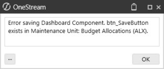
Figure 2.1
As it turns out, there was a button recently created in the live environment with the same name you used for a button in development. The error the administrator sees is just the first naming conflict, but this is potentially the tip of the iceberg. Once you change the button name in your sandbox environment and re-export the dashboard, your administrator attempts to load the dashboard and alerts you that another naming conflict occurred.
You can see how this can quickly snowball and turn what should be a half-day exercise into a week’s worth of trial and error. Workspaces solve this problem by isolating development efforts to reduce errors and promote efficiency.
With Workspaces, guesswork is eliminated. Developers can confidently build, refine, and deploy dashboards without worrying about conflicts or unintended disruptions. The structured environment allows teams to focus on creating dashboard content, not troubleshooting deployment issues.
Understanding Workspaces › Definition and Concept of Workspaces › Benefits of Using Workspaces
Flexibility and Sharing
Understanding Workspaces › Definition and Concept of Workspaces › Benefits of Using Workspaces › Flexibility and Sharing
Limit Access to Workspaces
Workspaces seamlessly integrate with the platform’s built-in security model, ensuring that access control remains both flexible and secure. By leveraging security groups, administrators can define who can access and modify a Workspace, maintaining a clear distinction between those who can access content and those who can actively develop and maintain it.
Understanding Workspaces › Definition and Concept of Workspaces › Benefits of Using Workspaces › Flexibility and Sharing › Limit Access to Workspaces
Granular Access Control
Each Workspace has two levels of security assignments:
Maintenance Groups – These groups contain users responsible for building, editing, and maintaining the Workspace content. Only members of these groups can make changes, ensuring controlled development.
Access Groups – These groups allow broader visibility into the Workspace. Users in access groups can view or review the content without being able to modify or disrupt it.
Understanding Workspaces › Definition and Concept of Workspaces › Benefits of Using Workspaces › Flexibility and Sharing › Limit Access to Workspaces
Example: Controlled Collaboration
Imagine a scenario where multiple teams need access to a Workspace. The development team (maintenance group) is responsible for creating dashboards, reports, or application components, while the QA team and business stakeholders (access group) need visibility to review progress without modifying the work. By assigning different security groups to these roles, Workspaces enable controlled collaboration – ensuring that development remains organized while still allowing transparency across teams.
Understanding Workspaces › Definition and Concept of Workspaces › Benefits of Using Workspaces › Flexibility and Sharing › Limit Access to Workspaces
Benefits of Workspace Security Controls
Prevents Unauthorized Changes – Only designated maintenance group members can edit, reducing accidental modifications.
Encourages Cross-Team Visibility – Stakeholders and reviewers can access Workspaces without disrupting development.
Maintains Data Integrity – Ensures that only the right people can push changes to production.
Supports Compliance and Governance – Security groups align with organizational policies, making auditing and user management easier.
By incorporating security groups at both the maintenance and access levels, Workspaces provide a structured yet collaborative development environment, enabling teams to work efficiently while maintaining strong access controls. The ability to leverage your existing security model allows you to facilitate who can modify and who can access dashboards by creating security groups for different development teams and QA or business stakeholder teams that may be responsible for multiple Workspace projects.
In the Practical Use Cases section, later in this chapter, we’ll walk you through an example of how to configure Workspace security using Security Group role assignments, and explain how different users can have access to multiple Workspaces while limiting maintenance rights – this is incredibly powerful when you’re managing multiple development projects and need to ensure that dashboards are not accidentally modified by users that you have not assigned maintenance rights to.
Understanding Workspaces › Definition and Concept of Workspaces › Benefits of Using Workspaces
Naming Conventions
You can now use the same name of an object multiple times, as long as the object with the same name is in a separate Workspace. Prior to the release of Workspaces, it was something of a challenge naming new dashboards and components if the object name already existed, meaning that you could not use the same name for a dashboard or component if it already existed, even if it was stored in a separate maintenance unit.
To explain this more explicitly, say you need to add a new button to a dashboard to open a file, and you name the button btn_OpenFile. If another button in the application already exists with the name btn_OpenFile, you previously could not save the new button until you gave it a different name, maybe btn_OpenFile2. Assuming you are not aware of the existing btn_OpenFile button, wouldn’t you wonder if there was supposed to be a button named btn_OpenFile1? The ability to reuse object names in separate Workspaces means you can now name the new button btn_OpenFile to stay organized and clean.
The same concept applies to all objects in the Workspace, including maintenance units, dashboards, Cube Views, data management jobs, components, data adapters, files, strings, and Assemblies.
Understanding Workspaces › Definition and Concept of Workspaces › Benefits of Using Workspaces
Foundation For Future Development
Understanding Workspaces › Definition and Concept of Workspaces › Benefits of Using Workspaces › Foundation For Future Development
Central Workspace Design Templates
Solutions downloaded from the Solution Exchange have started transitioning how the solutions are built using Workspaces, with solutions fully packaged within the Workspace. This means that when you load solutions from the Solution Exchange, the Workspace will include Assemblies with the code files housed in the Workspace rather than importing them directly into the application’s business rules library.
Developers can build standard dashboard layout templates in dedicated Workspaces for the sole purpose of sharing them with other team members in the organization, ensuring a consistent end-user experience. The more familiar you are with Workspaces, the more value you will see as you develop content.
Product Packaging for Creating, Deploying, and Migrating Solutions Developers now have a whole new way to create and share solutions in a way that is centrally managed for streamlined navigation, troubleshooting, and deployment. As with any software, organizations typically have a separate environment for building and testing new solutions and updates before migrating them to the live environment; this is commonly known as a “sandbox”
environment. The introduction of Workspaces now allows developers to work in a sandbox environment and quickly and easily port solutions between the sandbox and live environments.
Understanding Workspaces › Definition and Concept of Workspaces › Benefits of Using Workspaces › Foundation For Future Development
Cube View Groups
Cube Views can be built and managed within a Workspace’s maintenance unit without navigating out of the Workspace and into the Cube Views page.
Understanding Workspaces › Definition and Concept of Workspaces › Benefits of Using Workspaces › Foundation For Future Development
Data Management Groups
Data management groups can be built and managed within a Workspace’s maintenance unit without navigating out of the Workspace and into the Data Management page.
Understanding Workspaces › Definition and Concept of Workspaces › Benefits of Using Workspaces › Foundation For Future Development
Assemblies
Assemblies, also known as business rules, can be stored and maintained within a Workspace’s maintenance unit as well, making this part of a solution especially powerful when developing logic that will control the functionality of a given solution.
Understanding Workspaces › Definition and Concept of Workspaces › Benefits of Using Workspaces › Foundation For Future Development
Packaging The Solution
OneStream solutions are built on the framework and mindset of a dashboard being the “main” product; however, there are other objects to consider when thinking about a solution. In terms of sharing solutions or migrating a solution between environments, developers have previously had to extract multiple objects from an application in order to load the full solution into another application.
The figure below shows the Load/Extract window with the items that would need to be individually extracted highlighted. This process of extracting all solution items can be confusing and cause solutions not to work as designed if any one item is missed when exporting from the development environment, adding risk to a seemingly simple porting objective.
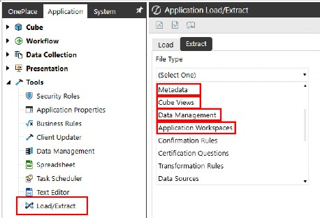
Figure 2.5
Once development becomes fully built within a Workspace, the extract process is much simpler and reduces the risk of forgetting to extract items such as Cube Views, data management jobs, and Assemblies. The figure below shows the process of extracting a single item (Application Workspaces) from the File Type drop-down menu and selecting the Workspace with all related items neatly packaged in a single XML file.
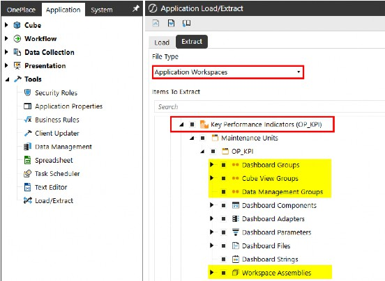
Figure 2.6
Understanding Workspaces › Definition and Concept of Workspaces
Practical Use Cases
Understanding Workspaces › Definition and Concept of Workspaces › Practical Use Cases
Organizing Dashboards
OneStream allows you to organize your dashboards and related objects by grouping them into Workspaces, providing a cleaner view of what solutions are in your application. When you need to make changes to a Cube View or data management job, you can simply navigate to the object’s Workspace to find the object you need to update.
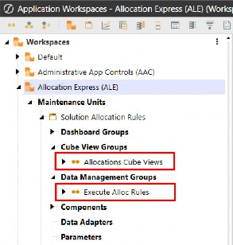
Figure 2.7
Workspaces can be organized in many ways, whether it be by function area, development projects, or however your organization wants to group specific workstreams. The figure below is an example of Workspace categorization by functional area, making it much easier to find what you’re looking for and troubleshoot when needed.
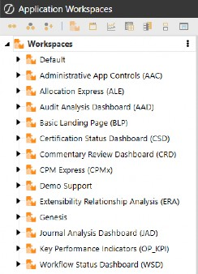
Figure 2.8
Understanding Workspaces › Definition and Concept of Workspaces › Practical Use Cases
Sharing Packaged Solutions
You now have the ability to package solutions into Workspaces for export and sharing. This is especially powerful when you consider the standard way of exporting solutions requires you to export piecemeal items from the Load/Extract page. In this use case, we’ve developed a solution, below, to display KPIs and are ready to share the solution with other developers, applications, or even publish the solution on OneStream’s Community Solutions forum.
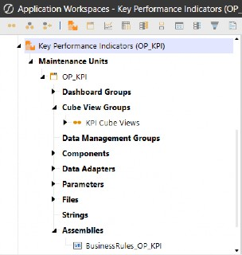
Figure 2.9
With Workspaces, you can easily export the Workspace and all related objects with one extract file.
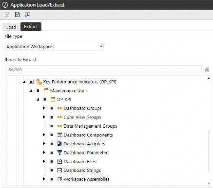
Figure 2.10
Understanding Workspaces › Definition and Concept of Workspaces › Practical Use Cases
Enable Multiple Developers to Build Simultaneously
For this use case, we’ll show how to configure Workspaces to grant access and maintenance rights to developers working on separate workstreams, how to add an overarching security group with rights to multiple Workspaces, and how the specified security groups are configured.
Understanding Workspaces › Definition and Concept of Workspaces › Practical Use Cases › Enable Multiple Developers to Build Simultaneously
Use Case
We have two developers currently building dashboard solutions and one QA user responsible for reviewing and ultimately signing off on the solutions before they can be made available for end-users. Below is our development team and their security group assignments, as well as their role in development, and which solutions they are responsible for.
| Security Group | Name | Role | Workspace |
|---|---|---|---|
| DeveloperGroup1 | EricTelhiard | Maintenance | Annual Operating Plan |
| DeveloperGroup2 | JessicaToner | Maintenance | Close and Consolidation |
| DevelopmentQA | TomShea | Access | Annual Operating Plan Close and Consolidation |
Figure 2.11
Understanding Workspaces › Definition and Concept of Workspaces › Practical Use Cases › Enable Multiple Developers to Build Simultaneously
Application Security Roles
There are three primary security role assignments that control access to the Workspaces page, Workspace management, and Workspace Assemblies. To configure these roles, navigate to the Security Roles page located under the Tools section of the Application tab. OneStream’s flexible security model allows you to tailor access and permissions across various Workspace components, enabling you to assign appropriate rights based on user responsibilities.
AdministerApplicationWorkspaceAssemblies Create and modify Workspace Assemblies
ManageApplicationWorkspaces
Create and modify Workspaces
The image below illustrates the Workspace-specific security roles (left) and the corresponding permissions they grant (right).
WorkspaceAdminPage
Access the Workspaces Page
Figure 2.12
To grant users access to the Workspaces page and the ability to manage Workspaces and Workspace Assemblies, they must be added to the appropriate Application Security Role-assigned groups. Once the security groups shown in Figure 2.11 are created, they can be added as Child Groups to the relevant Application Security Role groups in your application settings. This ensures proper inheritance of access and management rights.
Refer to Chapter 3 for a step-by-step walkthrough on how to navigate and configure these settings.
Understanding Workspaces › Definition and Concept of Workspaces › Practical Use Cases › Enable Multiple Developers to Build Simultaneously
Security Configuration
Before security is assigned to the Workspace, start by creating the security groups (if they don’t already exist) and adding the appropriate users to the groups. In this example, we only have one developer under DeveloperGroup1; however, you could have as many users in these groups as necessary.
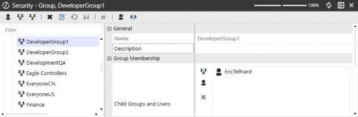
Figure 2.13
The next security group we need to create is DeveloperGroup2, and we need to assign a developer to it.
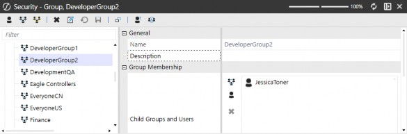
Figure 2.14
Now that we’ve established our two dedicated developer security groups, we need to create a group for QA users or business stakeholders.
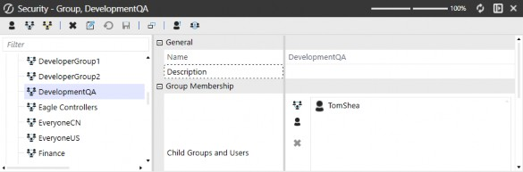
Figure 2.15
Understanding Workspaces › Definition and Concept of Workspaces › Practical Use Cases › Enable Multiple Developers to Build Simultaneously
Workspace Security Assignment
Once our developers and QA users are in the appropriate security groups, we can assign the rights to the Workspaces. We’ve assigned DeveloperGroup1 and DeveloperGroup2 to the maintenance groups of the Annual Operating Plan and Close and Consolidation Workspaces. The Access Group for both Workspaces is assigned to DevelopmentQA, which is how we give access rights to our QA team without giving them rights to modify anything within the Workspaces.
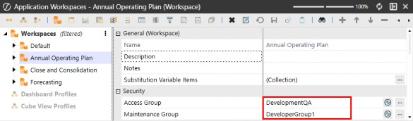
Figure 2.16
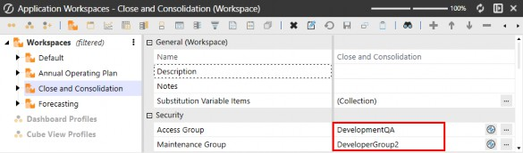
Figure 2.17
Understanding Workspaces › Definition and Concept of Workspaces › Practical Use Cases › Enable Multiple Developers to Build Simultaneously
Testing Security Assignments
EricTelhiard logs into OneStream and only sees the Workspace that he is responsible for.
Figure 2.18
JessicaToner logs into OneStream and only sees the Workspace that she is responsible for.
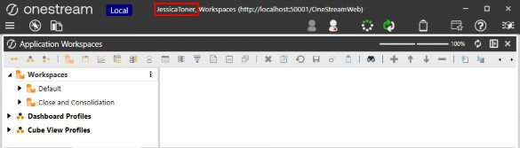
Figure 2.19
TomShea logs into OneStream and sees both Workspaces that he is responsible for (Annual Operating Plan & Close and Consolidation), but he cannot modify anything in the Workspaces (which is what we would expect, having given him access-only rights). The grey text on the right upon Maintenance Unit selection denotes that this is read-only.
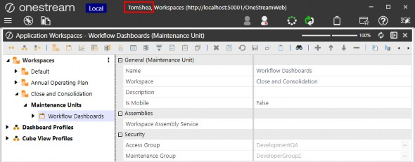
Figure 2.20
That’s it! That’s how easy it is to set up Workspace security to enable multiple developers to build simultaneously within OneStream without disrupting other developers or build activity. It’s worth noting that users can be added and removed from security groups as needed, so once you establish a security structure for Workspace development, you can reuse it over and over again.
Understanding Workspaces
Workspace vs Traditional Development Environments
Many organizations follow a development lifecycle that involves building and testing solutions in a sandbox environment before deploying them to a live production environment. Traditionally, this process can be time-consuming and disruptive, as administrators must take the application offline to copy the sandbox environment over to production.
This downtime creates several challenges:
End-user disruptions: Taking the application offline can temporarily block users from accessing critical reports, dashboards, or other functionalities needed for daily operations.
Developer delays: While the update process is underway, developers are unable to make further changes, which slows down progress and iteration cycles.
Risk of errors: Moving an entire environment can be complex, requiring careful coordination to avoid data loss or configuration issues.
Understanding Workspaces › Workspace vs Traditional Development Environments
How Workspaces Improve This Process
Workspaces provide a modernized approach that allows development, testing, and deployment to happen more seamlessly within the same instance – eliminating the need for disruptive environment swaps.
Parallel development: Developers can continue working on new solutions without interfering with live business operations.
Seamless QA testing: Users can test updates in real-time within the same instance, making quality assurance (QA) more efficient and accelerating feedback loops.
Concurrent collaboration: Developers and business users can work in the same Workspace at the same time, refining solutions independently without waiting for a full environment migration. Updates become visible upon refresh, enabling efficient coordination.
By leveraging Workspaces, organizations can streamline their development cycles, reduce downtime, and create a more agile, collaborative approach to solution development and deployment.
Understanding Workspaces › Workspace vs Traditional Development Environments
Potential Misconceptions About Workspaces
Understanding Workspaces › Workspace vs Traditional Development Environments › Potential Misconceptions About Workspaces
Too Complicated to Set Up
False. Setting up Workspaces is just as simple as configuring maintenance units. In the next chapter, you’ll find a hands-on exercise guiding you through the process of setting up a Workspace step by step.
Understanding Workspaces › Workspace vs Traditional Development Environments › Potential Misconceptions About Workspaces
Need to Rebuild Solutions
That statement is false because there is no need to rebuild existing solutions when adopting Workspaces in OneStream. Workspaces are an optional but powerful organizational tool designed to enhance structure and navigation, not a fundamental change that requires the redevelopment of existing solutions.
When you download and implement solutions from the OneStream Solution Exchange, any solutions that have been upgraded to use the Workspace methodology are designed to seamlessly integrate with your existing environment. These upgraded solutions automatically recognize and categorize existing objects – such as business rules, dashboards, and reports – placing them into the appropriate Workspace upon loading into the application. This ensures a smooth transition without requiring users to manually reorganize or rewrite their solutions.
Rather than replacing or restructuring your current framework, Workspaces function as an additional tool in your development toolbox, helping to improve organization and accessibility while maintaining backward compatibility. You can continue using OneStream as you always have, but with the added benefit of a more structured approach to managing your assets going forward.
In summary, Workspaces enhance the way you interact with your solutions, but they do not require redevelopment. They simply provide a more intuitive, organized way to manage content, making it easier for developers and end users to navigate and maintain their OneStream applications efficiently.
Understanding Workspaces › Workspace vs Traditional Development Environments › Potential Misconceptions About Workspaces
No Benefit to My Organization
That statement is false because OneStream’s Workspaces provide value to all users, regardless of their role or the complexity of their development needs. Whether you’re managing multiple development projects or simply looking for a way to make dashboard navigation more intuitive, Workspaces enhance organization, accessibility, and efficiency across the board.
For developers and administrators handling multiple projects, Workspaces serve as a structured environment where assets such as dashboards, reports, and business rules can be logically grouped. This makes it easier to manage different development efforts without confusion or overlap, improving overall workflow efficiency.
For power users, Workspaces contribute to a better user experience by organizing content in a way that makes navigation more intuitive. Rather than sifting through a cluttered interface, users can quickly locate and interact with the dashboards and reports that are most relevant to their role.
Additionally, Workspaces help enforce security and access control by allowing organizations to assign permissions at a more granular level. This means that different teams or individuals can be granted access to only the content they need, reducing the risk of unauthorized modifications while keeping the user experience streamlined.
Ultimately, whether you are deeply involved in development or just need an easy way to navigate OneStream’s reporting and analysis tools, Workspaces provide undeniable benefits that enhance usability, organization, and security.
Understanding Workspaces
Tips for Optimizing Workspaces
Understanding Workspaces › Tips for Optimizing Workspaces
Assign Role-Based Security
When implementing security controls in your development environment, it’s crucial to leverage your existing security model rather than building something entirely new from scratch. This approach ensures efficiency and consistency across your organization while reducing administrative overhead.
By using your current security model, you can streamline the segregation of duties, ensuring that developers, QA teams, and other stakeholders have access only to the data and functionalities they need. This also allows you to apply and restrict modification rights appropriately, preventing unauthorized changes that could compromise system integrity. Additionally, it enhances the organization of dashboards and Workspaces, making it easier for developers to navigate and access relevant tools and data.
A key strategy for managing access control effectively is to create predefined security groups for development and QA teams. Establishing these groups from the outset enables quick and systematic assignment of security permissions at multiple levels – such as Workspaces and maintenance units. This granular control ensures that security policies align with your organization’s needs, maintaining compliance while fostering a structured and secure development environment.
By adopting this approach, you not only enhance security but also improve operational efficiency by reducing the time and effort required to manage access controls manually.
Understanding Workspaces › Tips for Optimizing Workspaces
Leverage Solution Exchange Solutions
Solutions available on the OneStream Solution Exchange are designed to be highly robust, feature-rich, and well-structured, making them excellent references for best practices in solution development. These solutions are built with real-world use cases in mind, offering organizations pre-configured functionality that can be leveraged, modified, or studied to improve their own implementations.
Understanding Workspaces › Tips for Optimizing Workspaces › Leverage Solution Exchange Solutions
The Shift to Workspace-Driven Solutions
As OneStream continues evolving, more solutions are being developed using the Workspace methodology. This shift enhances organization and usability by grouping relevant objects – such as business rules, data management jobs, and Assemblies – within a dedicated Workspace, providing a clearer and more structured way to manage solution components.
Understanding Workspaces › Tips for Optimizing Workspaces
Encourage Adoption of Development
The earlier you start incorporating Workspaces into your development workflow, the more benefits you’ll unlock in terms of efficiency, organization, and flexibility. Workspaces are designed to streamline development, making it easier to manage multiple projects simultaneously without disrupting ongoing operations.
Understanding Workspaces
Why Workspaces Are a Game-Changer for Developers
For developers, Workspaces provide a structured, isolated environment where they can build, test, and refine dashboards, reports, and business rules independently. This eliminates common bottlenecks that occur when multiple developers need to work within the same application environment.
Understanding Workspaces › Why Workspaces Are a Game-Changer for Developers
Key Benefits:
Parallel Development: Developers can work on new dashboards and features at the same time as others, without the risk of interfering with each other’s progress.
No Disruptions to Existing Processes: Unlike traditional methods that might require taking an application offline to implement changes, Workspaces let you continue building without affecting production or other development efforts.
Greater Autonomy: Developers don’t have to wait for others to finish their work before they can start their own. Workspaces provide independent environments that allow for faster iteration and experimentation.
More Agile Development: With Workspaces, changes can be tested and refined in real time, making it easier to gather feedback and optimize solutions before they’re deployed across the organization.
Understanding Workspaces › Why Workspaces Are a Game-Changer for Developers
A No-Brainer for Future-Proofing Your Development
By adopting Workspaces early, you’re setting up your organization for greater scalability and smoother collaboration. As OneStream continues evolving toward Workspace-driven solutions, being proactive in integrating this methodology will maximize your development flexibility and efficiency going forward.
Understanding Workspaces
Dashboard Types
When creating a new dashboard in OneStream, the Dashboard Type setting defaults to (Use Default). This means that the system applies the standard dashboard type configuration unless manually changed. Users, however, have the flexibility to adjust this setting to better fit the specific use case and functionality required.
Understanding Workspaces › Dashboard Types
Top Level
The dashboard type can be configured to determine how a dashboard is displayed within the OnePlace interface. By setting the Dashboard Type to Top Level, you control which dashboard is exposed at the highest level in the OnePlace navigation menu.
Understanding Workspaces › Dashboard Types › Top Level
Scenario Explanation
Imagine you have a dashboard group that contains multiple dashboards. For instance, you might have several dashboards, like 0_ImageSelection_BLP_OnePlace, and 0_LandingPage_BLP_OnePlace, all grouped together under a single Dashboard Group. This group is assigned to a dashboard profile that is exposed from OnePlace, but you only want one of these dashboards to be shown in the OnePlace dashboard menu at the top level – specifically, 0_LandingPage_BLP_OnePlace.
Understanding Workspaces › Dashboard Types › Top Level
How It Works
The dashboard group is part of a larger dashboard profile that defines the dashboards available to specific users or roles.
By default, when multiple dashboards are part of the group, they may all be accessible or visible to users, which could lead to navigation clutter or an inefficient user experience.
To manage this, you can go into the Behavior settings of the specific dashboard and set the Dashboard Type to Top Level. This ensures that only the chosen dashboard (
0_LandingPage_BLP_OnePlace) is exposed at the top level in the OnePlace menu, making it easily accessible from the main dashboard menu.
Understanding Workspaces › Dashboard Types › Top Level
Why Is This Important?
Streamlined User Experience: Users don’t have to sift through unnecessary options in the OnePlace menu. They can go straight to the most important or frequently used dashboard.
Focused Navigation: By restricting which dashboards appear in the top-level menu, you guide users to the most relevant content, improving workflow efficiency and reducing confusion.
Improved Dashboard Management: This setting ensures that only one or more key dashboards are highlighted for users, while others can remain accessible at a lower navigation level or hidden as needed.
In the figure below, we see two dashboards within the Dashboard Group assigned to the dashboard profile, but by setting the Dashboard Type of 0_LandingPage_BLP_OnePlace to Top Level, we ensure it is the only one visible from the OnePlace dashboard menu. This makes it the primary entry point for users, improving accessibility and overall experience.
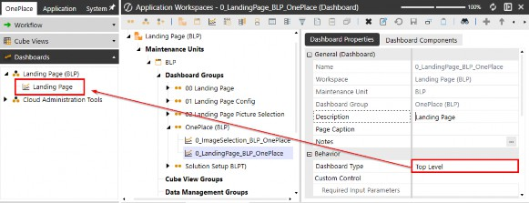
Figure 2.23
Understanding Workspaces › Dashboard Types
Top Level Without Parameter Prompts
The Top Level Without Parameter Prompts dashboard type is a powerful tool when you want to simplify the user experience and control which parameters are available for user interaction in your dashboards. This type is particularly useful when you want to show users a specific view of data – such as a financial report or an operational dashboard – without giving them the option to modify certain parameters, like time periods or dimensions.
Understanding Workspaces › Dashboard Types
Embedded
The Embedded dashboard type is one of the most commonly used when creating hierarchical or layered dashboards, especially in scenarios where you’re building dashboards on top of dashboards. This approach allows you to create a more dynamic and interactive dashboard structure by combining multiple dashboard elements, such as buttons, Cube Views, charts, and other dashboard components, in a nested or integrated format.
Understanding Workspaces › Dashboard Types › Embedded
Scenario Explanation
Imagine you have several dashboards that work together to form a larger, more complex interface. For instance, you might have:
A button dashboard that lets users navigate to different sections or trigger specific actions.
A Cube View dashboard that displays detailed financial or operational data.
A combined dashboard that brings the button dashboard and the Cube View dashboard together, creating a seamless, unified experience.
In this case, the button dashboard and the Cube View dashboard are embedded into the combined dashboard. This allows users to interact with the button (to navigate or trigger actions) and view the cube data in the same space, without having to open separate dashboards.
In your application, you may have a Landing Page dashboard exposed at the top level (via the Top-Level setting) in the OnePlace menu. However, within this landing page, you could have an embedded dashboard that contains detailed financial data (Cube View), which should not be exposed directly in OnePlace. By setting the Embedded Dashboard Type, users can access it through the Landing Page interface without cluttering the OnePlace menu.
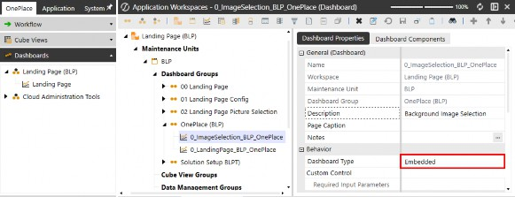
Figure 2.24
Understanding Workspaces › Dashboard Types
Embedded Dynamic
Embedded Dynamic dashboards are used when creating objects defined in the Workspace’s Assemblies. The concept of Embedded Dynamic dashboard usage and configuration will be explained in more detail in Chapter 8.
Understanding Workspaces › Dashboard Types
Embedded Dynamic Repeater
The Embedded Dynamic Repeater dashboard type is designed for scenarios where you want to display multiple instances of a single object within a dashboard. This is achieved by utilizing the Component Template Repeat Items property, which allows you to define a set of items that will each use the same object to display repeated content, based on the template properties. This approach is particularly useful when you need to dynamically display a list of buttons, such as workflow navigation buttons.
The concept of configuring and using the Embedded Dynamic Repeater dashboard type will be explored in more detail in Chapter 8, where we will delve into how to leverage this functionality effectively.
Understanding Workspaces › Dashboard Types
Custom Control
Custom Control dashboards allow you to use dashboard templates in order to change the behavior of the underlying components using Event Listeners.
Understanding Workspaces
Conclusion
In this chapter, we explored the core concept of Workspaces in OneStream and how they enhance data management, organization, and collaboration. You’ve learned how Workspaces function as flexible environments that allow multiple users to build and manage solutions independently while maintaining security and efficiency. By understanding their key components and best practices, you are now equipped to leverage Workspaces to streamline development and improve overall system performance.
With this foundational knowledge, you are ready to take the next step. In the following chapter, we will walk through a hands-on exercise to set up a Workspace, allowing you to apply what you’ve learned and experience the benefits firsthand!